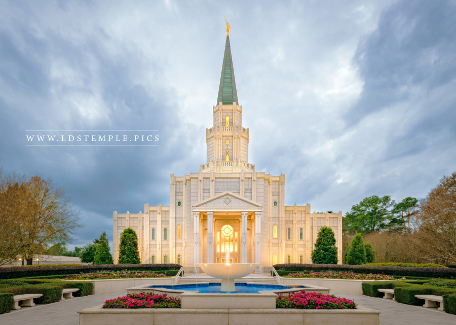

Sacramento Temple

The temple has a total of 19,500 square feet (1,810 m2), two ordinance rooms, and four sealing rooms.
Dedicated: July 29, 2006
The temple has a total of 19,500 square feet (1,810 m2), two ordinance rooms, and four sealing rooms.
Dedicated: July 29, 2006

The Boston Massachusetts Temple is large relative to most other LDS temples with a total of 69,600 square feet (6,470 m2), four ordinance rooms, and four sealing rooms.
Dedicated: October 1, 2000

The temple has a total of 33,970 square feet (3,156 m2), two ordinance rooms, and two sealing rooms.
Dedicated: August 26, 2000